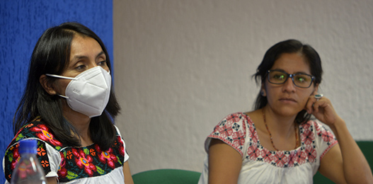
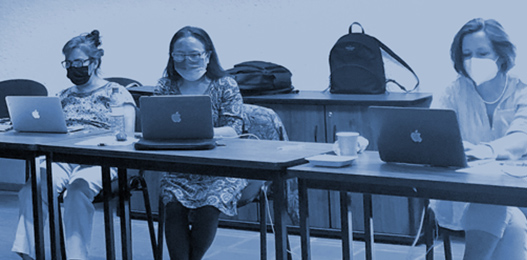
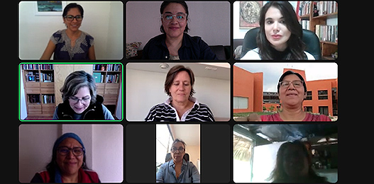
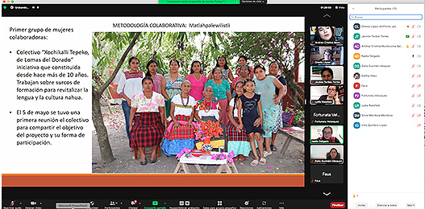

“Seminario de investigación dialógica e intercultural para la memoria y el reconocimiento de los saberes indígenas en torno al nacimiento y la crianza”
En julio de 2022 iniciamos el proyecto: “CREACIÓN DE LA PROPUESTA DE ARCHIVO DE LA PALABRA Y LOS SABERES INDÍGENAS: PRIMERA ETAPA, SABERES DE MUJERES NAHUAS SOBRE EL NACIMIENTO Y LA CRIANZA”, aprobado en el marco de la convocatoria a Proyectos de Investigación e Incidencia para la producción, protección, reconocimiento y resignificación de las memorias y la diversidad cultural y biocultural en México, del Consejo Nacional de Ciencia y Tecnología (CONACYT).


Desde este proyecto nos proponemos, inicialmente, recuperar un conjunto de saberes de mujeres nahuas sobre el nacimiento y la crianza de los niños, situados en las prácticas comunitarias, para la producción de un proyecto mayor de creación de un Archivo de los Saberes indígenas y comunitarios, ampliando las temáticas y alcances hacia la recuperación y preservación de saberes en términos más amplios.
El presente seminario pretende constituirse como un espacio académico reflexivo y de encuentro entre investigadoras indígenas y no indígenas, para debatir y reflexionar sobre los procesos de la memoria y la producción de saberes, prácticas y transformaciones culturales en torno al nacimiento y la crianza de las infancias nahuas. Así como las formas más adecuadas para la preservación y difusión de tales saberes.


Metodología del seminario:
Se trabajará desde metodologías colaborativas para favorecer los diálogos interculturales de expertas indígenas y no indígenas, sobre los saberes comunitarios del nacimiento y la crianza. Las sesiones del seminario se llevarán a cabo de manera quincenal, se alternarán actividades de debate sobre los hallazgos y avances del equipo de investigación y otras para discutir lecturas sobre aspectos teórico- metodológicos que fortalezcan el análisis y la elaboración del proyecto mayor del Archivo de la Palabra y los Saberes Indígenas.